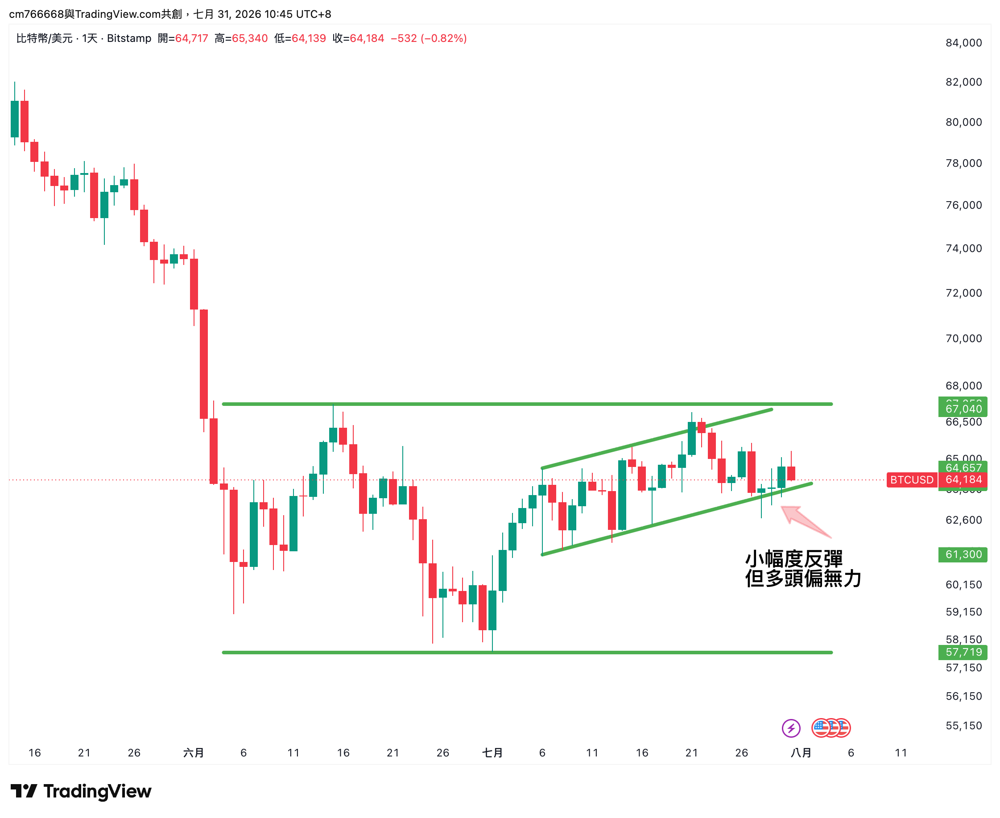

能源退燒、消費股回神？
本週市場的「風向」好像轉了
上週資金搶進能源避風頭，這週卻反過來——錢跑回消費股，防禦股熄火。3 分鐘看懂這禮拜的風向轉彎。
30秒 重點整理
美股：表面止穩，過程卻不平順
SPY（追蹤標普 500 指數的 ETF）這週最終上漲 0.37%，但過程並不平順：週間一度殺到比上週更低的低點，直到週五才拉回收復失土，收在本週價格區間最上緣。關鍵是週三（7/29）的 FOMC 會議——Fed 維持利率在 3.5%–3.75% 不變，但有 3 位官員罕見投票主張應該升息、不是降息，而且官方預測也還留著年底前再升一碼的可能，這種偏鷹的訊號讓市場一度緊張，直到週五才逐漸消化。
QQQ（那斯達克 100 指數的 ETF）本週幾乎打平，但目前仍低於 50 日均線，三週來看跌了 5.78%，科技股這段時間確實比大盤辛苦；反而 IWM（羅素 2000 小型股 ETF）這週上漲 0.49%，目前價格仍站上 50 日均線。
白話講：這週美股表面上算是止穩，但科技股還在補跌，還沒到真的全面翻多的階段。這種時候不用急著追高，先觀察站不站得穩再說。
BTC：上週沒過的關卡，這週連碰都沒碰到
BTC 現貨這週小漲 0.58%，但結構轉弱——本週高點比上週低、低點也比上週低，上週想挑戰的壓力位這次連碰都沒碰到，本週最高只到 65,658，在上升通道裡持續偏弱整理。

值得留意的是：BTC 永續合約（不是現貨）的資金費率這週由平轉正，方向上是做多的人重新願意付一點錢追多，但幅度其實還很小，稱不上激進。市場解讀是：價格結構還沒真的轉強，槓桿情緒卻已經悄悄回溫，這種「價格弱、情緒回溫」的組合值得留意，但還沒到過熱的程度。
目前價格仍低於 200 日均線，距離歷史高點還有 34.1% 的上檔空間，這波修復還沒走完，站不穩 67,040 之前，先觀察就好。
資金輪動：避風港熄燈了，錢開始往外跑
這是本週最大的轉折。上週資金搶進能源、公用事業避風頭，這週風向整個吹反了：
💰 這週風向轉去哪：非必需消費股（XLY）
- 上週還是最冷板塊的非必需消費股，這週翻身變成本週表現最強的板塊
- 領頭的是 Chipotle（CMG）：7 月下旬才剛因為環孢子蟲食安疑慮衝擊過業績，7/29 公布的第二季財報卻在這種逆風下每股盈餘小幅超出預期，還上調全年同店銷售成長預測（從原本估持平上修到小幅成長），市場解讀是消費力道比原本擔心的更有韌性，帶動股價單週大漲超過 21%
- Booking（BKNG）本週上漲 8.9%，跟 Chipotle 沒有直接關係——市場解讀是暑期旅遊旺季的消費需求比預期更有韌性，帶動旅遊類股走強；TJX 這類消費品牌也同步走揚
💸 這週風向從哪撤：公用事業股（XLU）
- 上週還排進最熱前三名的公用事業股，這週變成表現最弱的板塊
- 市場解讀是：這週三（7/29）的 FOMC 會議是關鍵——3 位官員罕見主張應該升息、官方預測也還留著年底再升一碼的可能，這種偏鷹的訊號對公用事業股這種「利率敏感、常被當債券替代品」的族群特別不利，是這次重挫的主要原因
- 同時消費、景氣循環類股回神，也顯示市場的風險胃口比上週稍微回升
非必需消費|走得穩的
CMG 本週 +21.2%
BKNG 本週 +8.9%
TJX 本週 +3.3%
SBUX 本週 +2.5%
AMZN 本週 +1.5%
公用事業|正在被倒貨的
AEP 本週 -5.7%
XEL 本週 -4.2%
EXC 本週 -4.1%
CEG 本週 -3.9%
SRE 本週 -3.7%
名單依本週相對表現排序，只列方向、不列進出場建議。想知道某一檔的關鍵價位，留言點名。
下週怎麼看
- SPY 若能真正站上 745（50日均線）→ 這波止穩比較有機會延續；再度跌破本週低點 729 → 回到防守姿態
- BTC 這波上升通道的壓力位在 67,040，這週連碰都沒碰到，下週能不能真的挑戰這個關卡是關鍵；永續合約資金費率如果繼續升溫但價格上不去，短線過熱風險要注意
- 非必需消費股（XLY）這週剛翻紅，下週能不能接著強？如果可以，代表消費力道的疑慮可能真的在消退（推測，非定論）
- 公用事業股（XLU）這週重挫，如果下週持續破位，代表市場對經濟前景的擔憂正在降溫，風險偏好可能持續回升
換你說說
本週的「風向反轉」你怎麼看？
選好之後留言告訴我為什麼，下週我挑幾個留言來聊 👇
另外：你希望下週多分析哪個標的？留言點菜，票多的加菜。